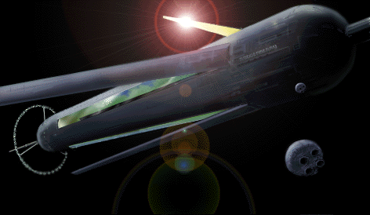

| O'Neill Colony Cylinder The most common Space Colony in the Earth Sphere |
|
|  | |
| Technical and Historical Notes | |
|
The space colonies of the Gundam world are based on the O'Neill Island 3 design, which consists of a huge rotating cylinder powered by solar energy. The completion of the first colony, Side 1 Bunch 1's Shangrila, marked the calender change from the old AD system to that of the Universal Century. Ever since, space colonies have housed the majority of mankinds population, and have been a cause for much of the earth spheres strife.
Each Island 3 colony cylinder contains two outer ports, six inner faces, three outer industrial areas, three colony mirrors and a single ring of agricultural domes. The cylinder itself rotates at a rate of 0.5 RPM, allowing the inside of the space colony to simulate Earths gravity. Three huge colony mirrors reflect light inside the cylinder, their relative positioning able to create night and day as well as seasonal changes for the colonies inhabitants. The inside of the colony is broken up into six sectors, three made of glass and allowing sunlight from the mirrors to hit the other three, which act as human settlements. The two end "caps" of the colony are covered with rock on the insides, forming two scalable mountains which have steadily decreasing gravity as one reaches the center. Each colony also has one spaceport in the center of each end-cap, which rotates counter to the colony wall, allowing for a zero-G environment. Finally, one industrial center is built along each of the three enclosed colony walls, and a ring of agricultural habitats at the end of the colony provide for the habitats needs, allowing all of the inner space to be used as living space. The result is a space colony that can comfortably house 10 million inhabitants, and can uncomfortably house much more. Each space colony is additionally built in a pair, two cylinders connected physically and rotating in a "bunch" formation. The momentum caused by this rotation allows the mirrors to constantly face the sun, a requirement for colonial life. While a single cylinder can be rotated to face the sun using propellant, this is not sustainable indefinitely, thus completed sides are made only of Bunch formation colonies. Since the One Week War, many colonies however have been forced to use emergency propellant reserves to maintain a livable habitat. Finally, colonies are placed in one of the seven "sides", each at one of the Earths five Lagrange points. Each side contained between 40 and 60 bunches of colonies at the outset of the war, the Lagrange points being the most stable orbital points in the Earth sphere, minimizing the amount of fuel needed to maintain a normal orbit. Sides 1 and 2, and Sides 4 and 6, orbit each other, in addition. While space colonies can exist outside of a Lagrange point, it requires an impressive amount of fuel for them to maintain a stable orbit. Side 7 was moved during the war, but it is unlikely that it will remain in its present position for more than a single year. O'Neills original design for each colony was to have six urban areas, seperated at each end of the three habitable sections of the colony. Three rural areas would connect them in the middle, giving each colony six "cities" and three rural, village areas, promoting cultural distinction. Further, a small number of people live in the agricultural ring, farmers dedicated to their livelihood. However, given that more than 500 colonies were built in the Gundam world, this standard does not always hold true. Some colonies in 0079 are industrial centers, much more heavily populated than the O'Neill standard. Some, such as Side 5's Texas Colony, are resort colonies intended entirely towards creating a single landscape, like Americas old wild west. Still others are political centers, used to house the impressive beaurocracy that goes towards managing a side of a billion people.
Furthest from the Earth and past the Moon, Side 3 in L2 uses a different kind of space colony design, the closed Cylinder type. This design does not have any mirrors, using other means to light up the inside, which can wholly be used for habitation. As a result, Side 3's colonies normally house twice as many people, but are generally seen as much more opressive and uncomfortable living spaces.
|
| Diagrams | |
|
|
|